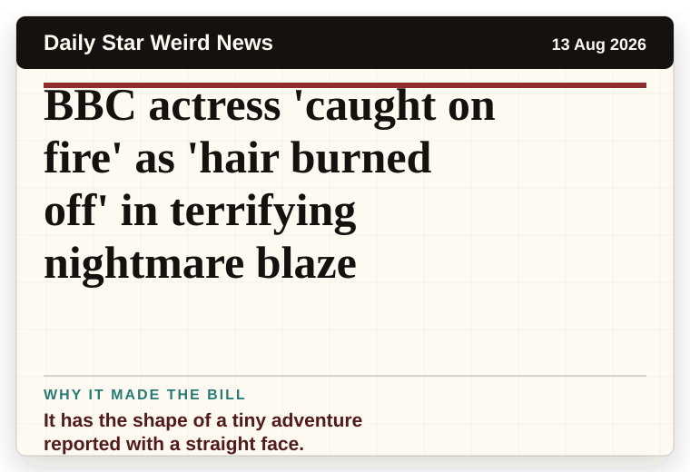
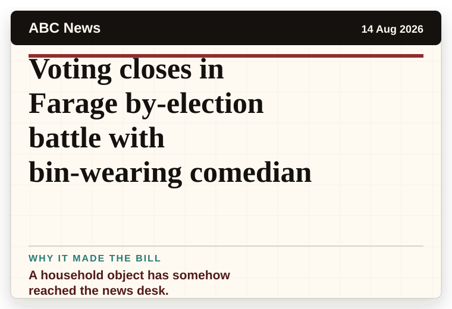
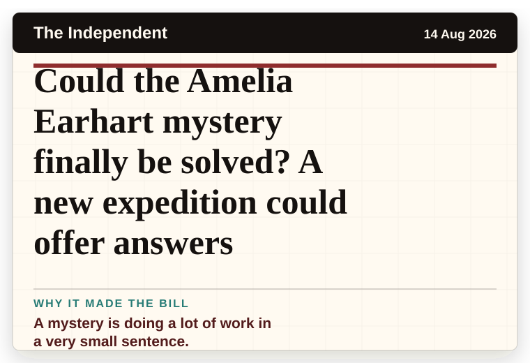
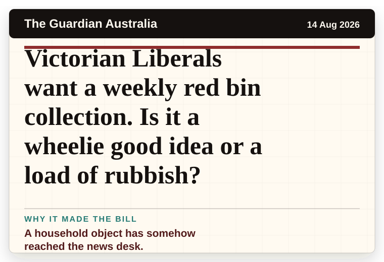
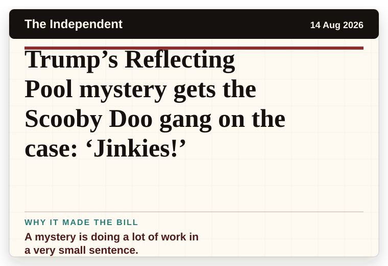
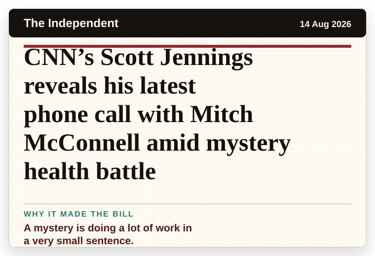
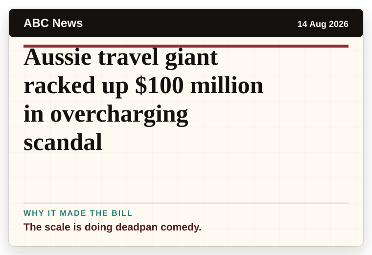

NT News
Australia
Trump and Albo have mystery phone call
A mystery is doing a lot of work in a very small sentence.
The latest daily picks, linked back to the original sources. Search the room, pick a source, or follow a headline out to the full story.
Record updated: 14 Aug 2026, 07:50 AM AEST
Showing 18 headline candidates from the refresh run completed on 14 Aug 2026, 07:50 AM AEST.
A mystery is doing a lot of work in a very small sentence.

A very ordinary object has wandered into serious news.

The scale is doing deadpan comedy.

A mystery is doing a lot of work in a very small sentence.

The headline is already trying not to laugh.

A very ordinary object has wandered into serious news.

The headline is already trying not to laugh.

It has the shape of a tiny adventure reported with a straight face.

A household object has somehow reached the news desk.

A wonderfully specific detail has taken centre stage.

A very ordinary object has wandered into serious news.

It has the shape of a tiny adventure reported with a straight face.

The question mark makes it feel like the host has paused for the room.

A mystery is doing a lot of work in a very small sentence.

A household object has somehow reached the news desk.

A mystery is doing a lot of work in a very small sentence.

A mystery is doing a lot of work in a very small sentence.

The scale is doing deadpan comedy.